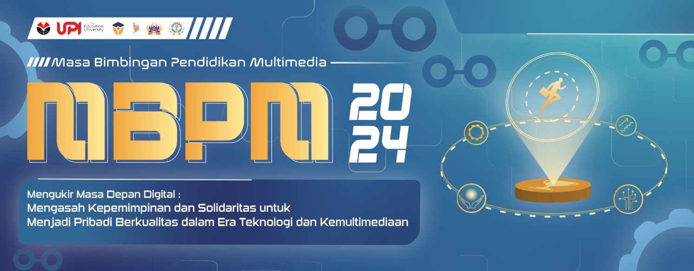

Creative Director
As the Creative Director, I led a team of 8 across three sub-teams (merchandise design, Instagram branding, and decoration) to deliver high-quality visuals aligned with the event’s brand guidelines. MBPM is an orientation program introducing new students to the university’s history, academic structure, and effective study strategies.